Rows: 365
Columns: 8
$ date <date> 2015-01-01, 2015-01-02, 2015-01-03, 2015-01-04, 2015-01-…
$ births <dbl> 8068, 10850, 8328, 7065, 11892, 12425, 12141, 12094, 1186…
$ wday <ord> Thu, Fri, Sat, Sun, Mon, Tue, Wed, Thu, Fri, Sat, Sun, Mo…
$ year <dbl> 2015, 2015, 2015, 2015, 2015, 2015, 2015, 2015, 2015, 201…
$ month <dbl> 1, 1, 1, 1, 1, 1, 1, 1, 1, 1, 1, 1, 1, 1, 1, 1, 1, 1, 1, …
$ day_of_year <int> 1, 2, 3, 4, 5, 6, 7, 8, 9, 10, 11, 12, 13, 14, 15, 16, 17…
$ day_of_month <dbl> 1, 2, 3, 4, 5, 6, 7, 8, 9, 10, 11, 12, 13, 14, 15, 16, 17…
$ day_of_week <dbl> 5, 6, 7, 1, 2, 3, 4, 5, 6, 7, 1, 2, 3, 4, 5, 6, 7, 1, 2, …
More ggplot2
Grayson White
Stat 241
Week 2 | Fall 2026
Announcements
- Office Hours Schedule
- P-Set 1 available now.
- Will discuss how to access the p-sets today!
- Due at 9am the following Thursday
- My Undergraduate Forestry Data Science summer research program application deadline is THIS FRIDAY!
Week 2 Goals
Mon Lecture
Basics of
ggplot2Explore several
geoms.And a little data wrangling with
dplyras needed!
Wed Lecture
- GitHub workflow overview
- Learn how to ask coding questions well.
- Graphing context!
- Labels
- Highlighting
- Useful text
- Look at more
geoms. - Explore further customizations.
- Color
- Themes
P-set tips
- Start on your problem sets early, and ask questions (in Slack, office hours, the internet) when you get stuck!
- Problem sets are meant to be engaged with over multiple days. It is a lot less effective for your learning if you try to sprint through it the day before it is due.
- If/when you get stuck, it can be helpful to take a break! Some things to try:
- Go onto another problem, solving it may give you ideas as to how to solve the one you are stuck on.
- Think about the problem as you are brushing your teeth or laying in bed.
- Time where you are “bored”/giving your brain time to wander can be helpful for problem solving.
Now: GitHub workflow demo
Recap Data: Births2015
Recap Data: Births2015
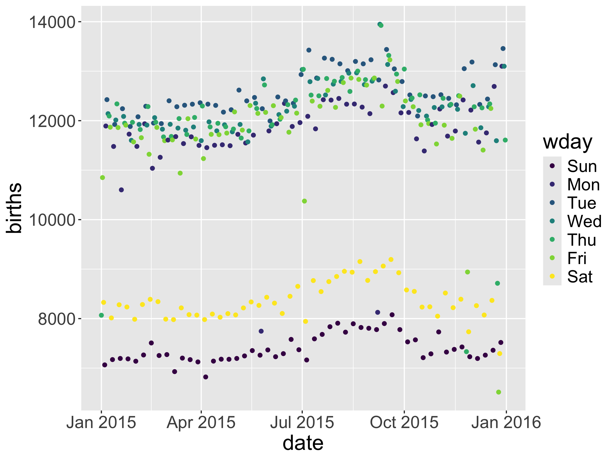
- Let’s think more about the scales.
- Let’s add more context!
Scales
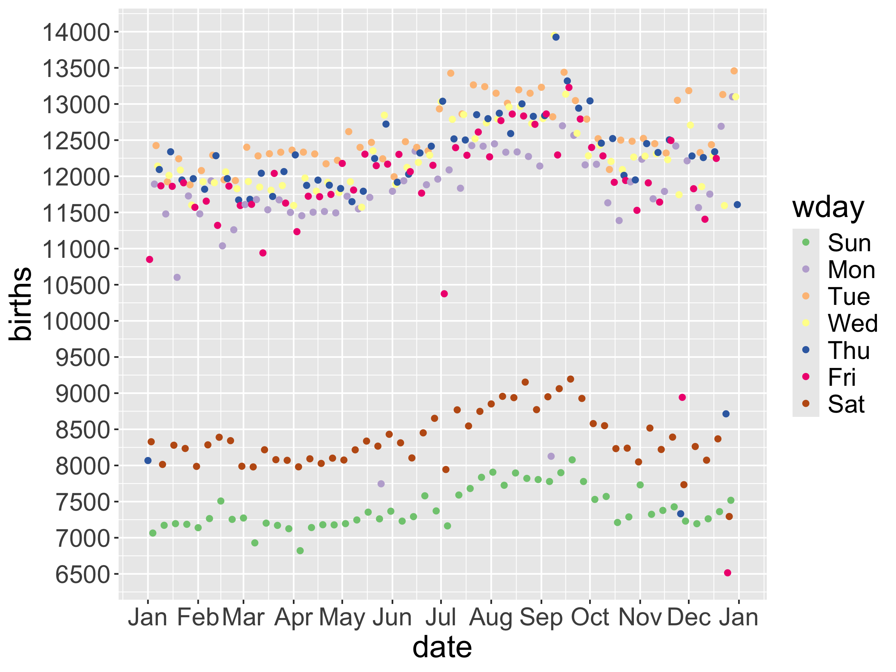
- Maybe we want to change the default settings of a scale.
- Maybe we want a different scale than the default.
Context: Labels
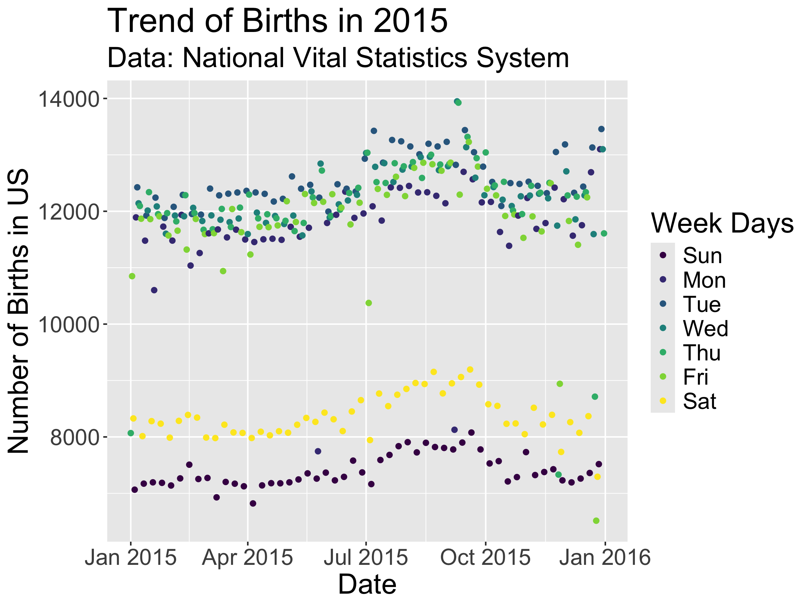
- Prefer citing the data at the bottom?
Context: Labels
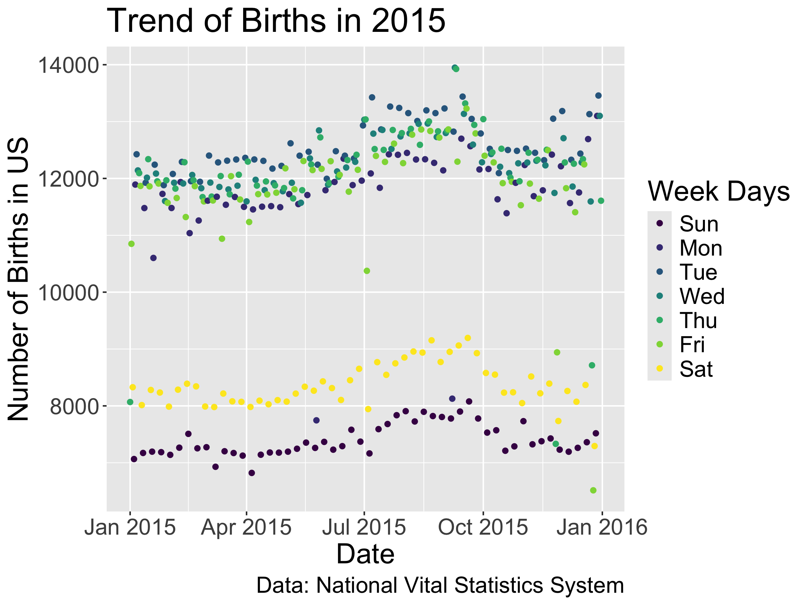
Prefer citing the data at the bottom?
For slide space, I will neglect my labeling in the for the rest of the slides.
Now we want to add even more context to help the reader understand whether or not birth rates on national holidays behave like weekends.
Context: Adding Holidays
library(lubridate)
holidays <-
data.frame(date = ymd("2015-01-01","2015-05-25", "2015-07-04",
"2015-12-25", "2015-11-26", "2015-12-24",
"2015-09-07"),
occasion = c("New Year", "Memorial Day",
"Independence Day", "Christmas",
"Thanksgiving", "Christmas Eve",
"Labor Day"),
emoji = c("1f389", "1f396", "1f386", "1f384",
"1f983", "1f381", "1f477"))
holidays <- left_join(holidays, Births2015)Context: Adding Holidays
Rows: 7
Columns: 10
$ date <date> 2015-01-01, 2015-05-25, 2015-07-04, 2015-12-25, 2015-11-…
$ occasion <chr> "New Year", "Memorial Day", "Independence Day", "Christma…
$ emoji <chr> "1f389", "1f396", "1f386", "1f384", "1f983", "1f381", "1f…
$ births <dbl> 8068, 7746, 7944, 6515, 7332, 8714, 8127
$ wday <ord> Thu, Mon, Sat, Fri, Thu, Thu, Mon
$ year <dbl> 2015, 2015, 2015, 2015, 2015, 2015, 2015
$ month <dbl> 1, 5, 7, 12, 11, 12, 9
$ day_of_year <int> 1, 145, 185, 359, 330, 358, 250
$ day_of_month <dbl> 1, 25, 4, 25, 26, 24, 7
$ day_of_week <dbl> 5, 2, 7, 6, 5, 5, 2- Let’s add some context.
Context: Adding Holidays

Context: Adding Holidays
- Problems?
Context: Adding Holidays
Context: Adding Holidays
Context: Adding Holidays
Context: Adding Holidays
ggplot(data = Births2015,
mapping = aes(x = date, y = births,
color = wday)) +
geom_point(size = 6, color = "black",
data = holidays) +
geom_point(size = 5, color = "grey90",
data = holidays) +
geom_point() +
annotate("text", x = as_date("2015-09-01"),
y = 7500, label = "Holidays",
color="black", size=5)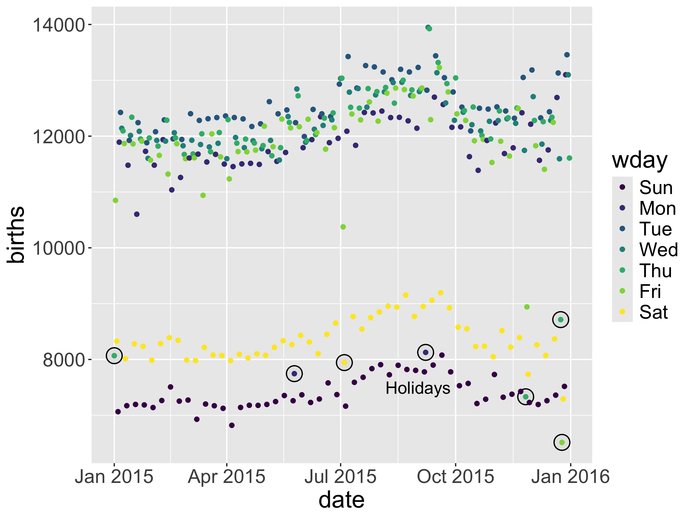
Context: Adding Holidays
ggplot(data = Births2015,
mapping = aes(x = date, y = births,
color = wday)) +
geom_point(size = 6, color = "black",
data = holidays) +
geom_point(size = 5, color = "grey90",
data = holidays) +
geom_point() +
annotate("segment", colour = "black",
x = as_date("2015-09-01"),
xend = holidays$date,
y = 6800, yend = holidays$births,
size = 1, alpha = 0.2, arrow = arrow())+
annotate("text", x = as_date("2015-09-01"),
y = 7500, label = "Holidays",
color="black", size=5)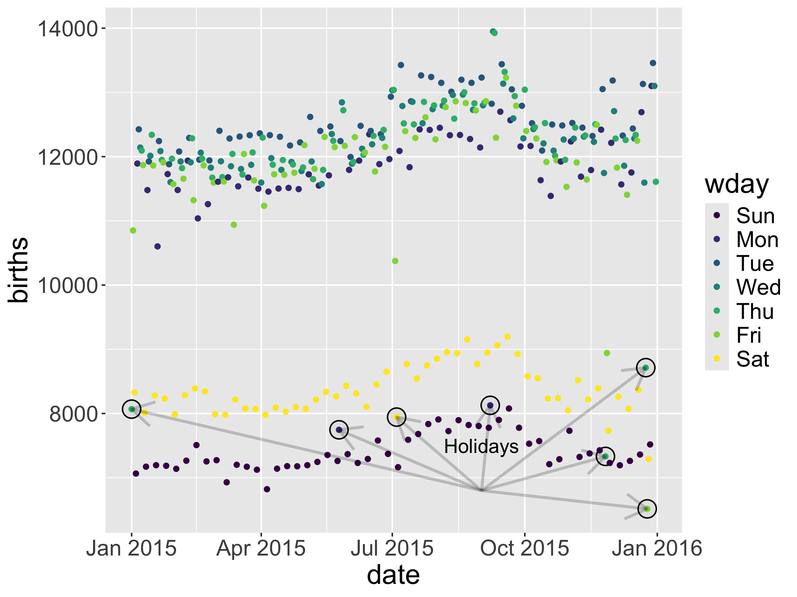
Context: Adding Holidays
- What do you think “\n” does?
Context: Adding Holidays
Context: Adding Holidays
# devtools::install_github("dill/emoGG")
library(emoGG)
ggplot(data = Births2015,
mapping = aes(x = date, y = births,
color = wday)) +
geom_point() +
geom_text(mapping = aes(label = label),
data = label_data,
color = "black", vjust = "top",
hjust = "left") +
geom_emoji(data = holidays,
mapping = aes(emoji = emoji,
x = date,
y = births))
Context
And there are lots more ways to annotate your graph (shaded regions, other context…).
A few notes:
- Don’t over do it!
- Like with selecting a
geomor amappingor ascale, try several out first.
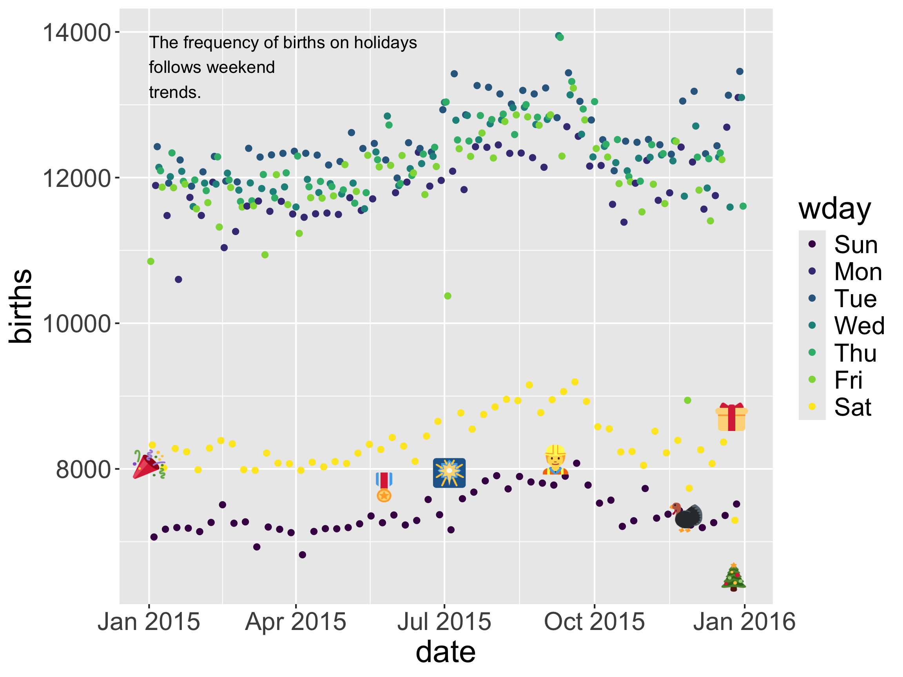
Handling Over-plotting
Let’s return to the US Forest Inventory and Analysis Program Idaho data
Handling Over-plotting
Handling Over-plotting
Handling Over-plotting
Handling Transformations
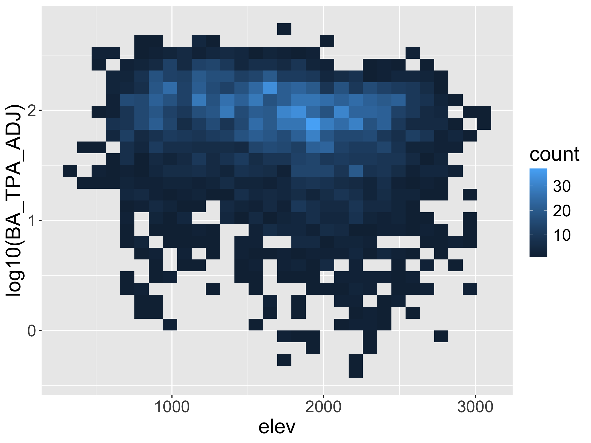
- Transform variables directly.
Handling Transformations
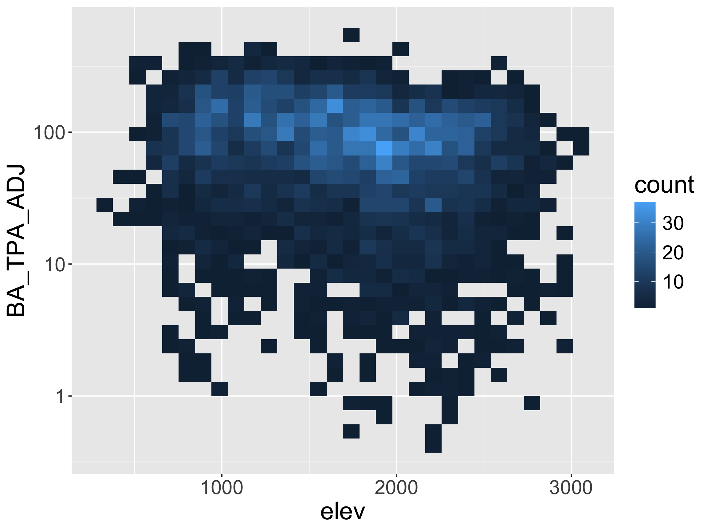
- Transform scale.
ColorBrewer
Color Options: Saturation
Color Options: Saturation
ColorBrewer YlGn palette
Viridis Palette
Viridis Palette
Viridis Palette
Color Options: Hue
[1] "white" "aliceblue" "antiquewhite"
[4] "antiquewhite1" "antiquewhite2" "antiquewhite3"
[7] "antiquewhite4" "aquamarine" "aquamarine1"
[10] "aquamarine2" "aquamarine3" "aquamarine4"
[13] "azure" "azure1" "azure2"
[16] "azure3" "azure4" "beige"
[19] "bisque" "bisque1" "bisque2"
[22] "bisque3" "bisque4" "black"
[25] "blanchedalmond" "blue" "blue1"
[28] "blue2" "blue3" "blue4"
[31] "blueviolet" "brown" "brown1"
[34] "brown2" "brown3" "brown4"
[37] "burlywood" "burlywood1" "burlywood2"
[40] "burlywood3" "burlywood4" "cadetblue"
[43] "cadetblue1" "cadetblue2" "cadetblue3"
[46] "cadetblue4" "chartreuse" "chartreuse1"
[49] "chartreuse2" "chartreuse3" "chartreuse4"
[52] "chocolate" "chocolate1" "chocolate2"
[55] "chocolate3" "chocolate4" "coral"
[58] "coral1" "coral2" "coral3"
[61] "coral4" "cornflowerblue" "cornsilk"
[64] "cornsilk1" "cornsilk2" "cornsilk3"
[67] "cornsilk4" "cyan" "cyan1"
[70] "cyan2" "cyan3" "cyan4"
[73] "darkblue" "darkcyan" "darkgoldenrod"
[76] "darkgoldenrod1" "darkgoldenrod2" "darkgoldenrod3"
[79] "darkgoldenrod4" "darkgray" "darkgreen"
[82] "darkgrey" "darkkhaki" "darkmagenta"
[85] "darkolivegreen" "darkolivegreen1" "darkolivegreen2"
[88] "darkolivegreen3" "darkolivegreen4" "darkorange"
[91] "darkorange1" "darkorange2" "darkorange3"
[94] "darkorange4" "darkorchid" "darkorchid1"
[97] "darkorchid2" "darkorchid3" "darkorchid4"
[100] "darkred" "darksalmon" "darkseagreen"
[103] "darkseagreen1" "darkseagreen2" "darkseagreen3"
[106] "darkseagreen4" "darkslateblue" "darkslategray"
[109] "darkslategray1" "darkslategray2" "darkslategray3"
[112] "darkslategray4" "darkslategrey" "darkturquoise"
[115] "darkviolet" "deeppink" "deeppink1"
[118] "deeppink2" "deeppink3" "deeppink4"
[121] "deepskyblue" "deepskyblue1" "deepskyblue2"
[124] "deepskyblue3" "deepskyblue4" "dimgray"
[127] "dimgrey" "dodgerblue" "dodgerblue1"
[130] "dodgerblue2" "dodgerblue3" "dodgerblue4"
[133] "firebrick" "firebrick1" "firebrick2"
[136] "firebrick3" "firebrick4" "floralwhite"
[139] "forestgreen" "gainsboro" "ghostwhite"
[142] "gold" "gold1" "gold2"
[145] "gold3" "gold4" "goldenrod"
[148] "goldenrod1" "goldenrod2" "goldenrod3"
[151] "goldenrod4" "gray" "gray0"
[154] "gray1" "gray2" "gray3"
[157] "gray4" "gray5" "gray6"
[160] "gray7" "gray8" "gray9"
[163] "gray10" "gray11" "gray12"
[166] "gray13" "gray14" "gray15"
[169] "gray16" "gray17" "gray18"
[172] "gray19" "gray20" "gray21"
[175] "gray22" "gray23" "gray24"
[178] "gray25" "gray26" "gray27"
[181] "gray28" "gray29" "gray30"
[184] "gray31" "gray32" "gray33"
[187] "gray34" "gray35" "gray36"
[190] "gray37" "gray38" "gray39"
[193] "gray40" "gray41" "gray42"
[196] "gray43" "gray44" "gray45"
[199] "gray46" "gray47" "gray48"
[202] "gray49" "gray50" "gray51"
[205] "gray52" "gray53" "gray54"
[208] "gray55" "gray56" "gray57"
[211] "gray58" "gray59" "gray60"
[214] "gray61" "gray62" "gray63"
[217] "gray64" "gray65" "gray66"
[220] "gray67" "gray68" "gray69"
[223] "gray70" "gray71" "gray72"
[226] "gray73" "gray74" "gray75"
[229] "gray76" "gray77" "gray78"
[232] "gray79" "gray80" "gray81"
[235] "gray82" "gray83" "gray84"
[238] "gray85" "gray86" "gray87"
[241] "gray88" "gray89" "gray90"
[244] "gray91" "gray92" "gray93"
[247] "gray94" "gray95" "gray96"
[250] "gray97" "gray98" "gray99"
[253] "gray100" "green" "green1"
[256] "green2" "green3" "green4"
[259] "greenyellow" "grey" "grey0"
[262] "grey1" "grey2" "grey3"
[265] "grey4" "grey5" "grey6"
[268] "grey7" "grey8" "grey9"
[271] "grey10" "grey11" "grey12"
[274] "grey13" "grey14" "grey15"
[277] "grey16" "grey17" "grey18"
[280] "grey19" "grey20" "grey21"
[283] "grey22" "grey23" "grey24"
[286] "grey25" "grey26" "grey27"
[289] "grey28" "grey29" "grey30"
[292] "grey31" "grey32" "grey33"
[295] "grey34" "grey35" "grey36"
[298] "grey37" "grey38" "grey39"
[301] "grey40" "grey41" "grey42"
[304] "grey43" "grey44" "grey45"
[307] "grey46" "grey47" "grey48"
[310] "grey49" "grey50" "grey51"
[313] "grey52" "grey53" "grey54"
[316] "grey55" "grey56" "grey57"
[319] "grey58" "grey59" "grey60"
[322] "grey61" "grey62" "grey63"
[325] "grey64" "grey65" "grey66"
[328] "grey67" "grey68" "grey69"
[331] "grey70" "grey71" "grey72"
[334] "grey73" "grey74" "grey75"
[337] "grey76" "grey77" "grey78"
[340] "grey79" "grey80" "grey81"
[343] "grey82" "grey83" "grey84"
[346] "grey85" "grey86" "grey87"
[349] "grey88" "grey89" "grey90"
[352] "grey91" "grey92" "grey93"
[355] "grey94" "grey95" "grey96"
[358] "grey97" "grey98" "grey99"
[361] "grey100" "honeydew" "honeydew1"
[364] "honeydew2" "honeydew3" "honeydew4"
[367] "hotpink" "hotpink1" "hotpink2"
[370] "hotpink3" "hotpink4" "indianred"
[373] "indianred1" "indianred2" "indianred3"
[376] "indianred4" "ivory" "ivory1"
[379] "ivory2" "ivory3" "ivory4"
[382] "khaki" "khaki1" "khaki2"
[385] "khaki3" "khaki4" "lavender"
[388] "lavenderblush" "lavenderblush1" "lavenderblush2"
[391] "lavenderblush3" "lavenderblush4" "lawngreen"
[394] "lemonchiffon" "lemonchiffon1" "lemonchiffon2"
[397] "lemonchiffon3" "lemonchiffon4" "lightblue"
[400] "lightblue1" "lightblue2" "lightblue3"
[403] "lightblue4" "lightcoral" "lightcyan"
[406] "lightcyan1" "lightcyan2" "lightcyan3"
[409] "lightcyan4" "lightgoldenrod" "lightgoldenrod1"
[412] "lightgoldenrod2" "lightgoldenrod3" "lightgoldenrod4"
[415] "lightgoldenrodyellow" "lightgray" "lightgreen"
[418] "lightgrey" "lightpink" "lightpink1"
[421] "lightpink2" "lightpink3" "lightpink4"
[424] "lightsalmon" "lightsalmon1" "lightsalmon2"
[427] "lightsalmon3" "lightsalmon4" "lightseagreen"
[430] "lightskyblue" "lightskyblue1" "lightskyblue2"
[433] "lightskyblue3" "lightskyblue4" "lightslateblue"
[436] "lightslategray" "lightslategrey" "lightsteelblue"
[439] "lightsteelblue1" "lightsteelblue2" "lightsteelblue3"
[442] "lightsteelblue4" "lightyellow" "lightyellow1"
[445] "lightyellow2" "lightyellow3" "lightyellow4"
[448] "limegreen" "linen" "magenta"
[451] "magenta1" "magenta2" "magenta3"
[454] "magenta4" "maroon" "maroon1"
[457] "maroon2" "maroon3" "maroon4"
[460] "mediumaquamarine" "mediumblue" "mediumorchid"
[463] "mediumorchid1" "mediumorchid2" "mediumorchid3"
[466] "mediumorchid4" "mediumpurple" "mediumpurple1"
[469] "mediumpurple2" "mediumpurple3" "mediumpurple4"
[472] "mediumseagreen" "mediumslateblue" "mediumspringgreen"
[475] "mediumturquoise" "mediumvioletred" "midnightblue"
[478] "mintcream" "mistyrose" "mistyrose1"
[481] "mistyrose2" "mistyrose3" "mistyrose4"
[484] "moccasin" "navajowhite" "navajowhite1"
[487] "navajowhite2" "navajowhite3" "navajowhite4"
[490] "navy" "navyblue" "oldlace"
[493] "olivedrab" "olivedrab1" "olivedrab2"
[496] "olivedrab3" "olivedrab4" "orange"
[499] "orange1" "orange2" "orange3"
[502] "orange4" "orangered" "orangered1"
[505] "orangered2" "orangered3" "orangered4"
[508] "orchid" "orchid1" "orchid2"
[511] "orchid3" "orchid4" "palegoldenrod"
[514] "palegreen" "palegreen1" "palegreen2"
[517] "palegreen3" "palegreen4" "paleturquoise"
[520] "paleturquoise1" "paleturquoise2" "paleturquoise3"
[523] "paleturquoise4" "palevioletred" "palevioletred1"
[526] "palevioletred2" "palevioletred3" "palevioletred4"
[529] "papayawhip" "peachpuff" "peachpuff1"
[532] "peachpuff2" "peachpuff3" "peachpuff4"
[535] "peru" "pink" "pink1"
[538] "pink2" "pink3" "pink4"
[541] "plum" "plum1" "plum2"
[544] "plum3" "plum4" "powderblue"
[547] "purple" "purple1" "purple2"
[550] "purple3" "purple4" "red"
[553] "red1" "red2" "red3"
[556] "red4" "rosybrown" "rosybrown1"
[559] "rosybrown2" "rosybrown3" "rosybrown4"
[562] "royalblue" "royalblue1" "royalblue2"
[565] "royalblue3" "royalblue4" "saddlebrown"
[568] "salmon" "salmon1" "salmon2"
[571] "salmon3" "salmon4" "sandybrown"
[574] "seagreen" "seagreen1" "seagreen2"
[577] "seagreen3" "seagreen4" "seashell"
[580] "seashell1" "seashell2" "seashell3"
[583] "seashell4" "sienna" "sienna1"
[586] "sienna2" "sienna3" "sienna4"
[589] "skyblue" "skyblue1" "skyblue2"
[592] "skyblue3" "skyblue4" "slateblue"
[595] "slateblue1" "slateblue2" "slateblue3"
[598] "slateblue4" "slategray" "slategray1"
[601] "slategray2" "slategray3" "slategray4"
[604] "slategrey" "snow" "snow1"
[607] "snow2" "snow3" "snow4"
[610] "springgreen" "springgreen1" "springgreen2"
[613] "springgreen3" "springgreen4" "steelblue"
[616] "steelblue1" "steelblue2" "steelblue3"
[619] "steelblue4" "tan" "tan1"
[622] "tan2" "tan3" "tan4"
[625] "thistle" "thistle1" "thistle2"
[628] "thistle3" "thistle4" "tomato"
[631] "tomato1" "tomato2" "tomato3"
[634] "tomato4" "turquoise" "turquoise1"
[637] "turquoise2" "turquoise3" "turquoise4"
[640] "violet" "violetred" "violetred1"
[643] "violetred2" "violetred3" "violetred4"
[646] "wheat" "wheat1" "wheat2"
[649] "wheat3" "wheat4" "whitesmoke"
[652] "yellow" "yellow1" "yellow2"
[655] "yellow3" "yellow4" "yellowgreen" Color Options: Hue
Color Options: Hue
ColorBrewer Hue
Themes
- Can override specific aspects of the theme
- EX:
+ theme(legend.position = "bottom")
- EX:
- Can globally set theme options:
Themes
ggplot(data = Births2015,
mapping = aes(x = date, y = births,
color = wday)) +
geom_point() +
theme(axis.title.x =
element_text(color = "#C1D82F", size = 20),
axis.title.y =
element_text(color = "#00857D", size = 25),
axis.text.x =
element_text(color = "#C1D82F", size = 12),
axis.text.y =
element_text(color = "#FF7401", size = 18)) 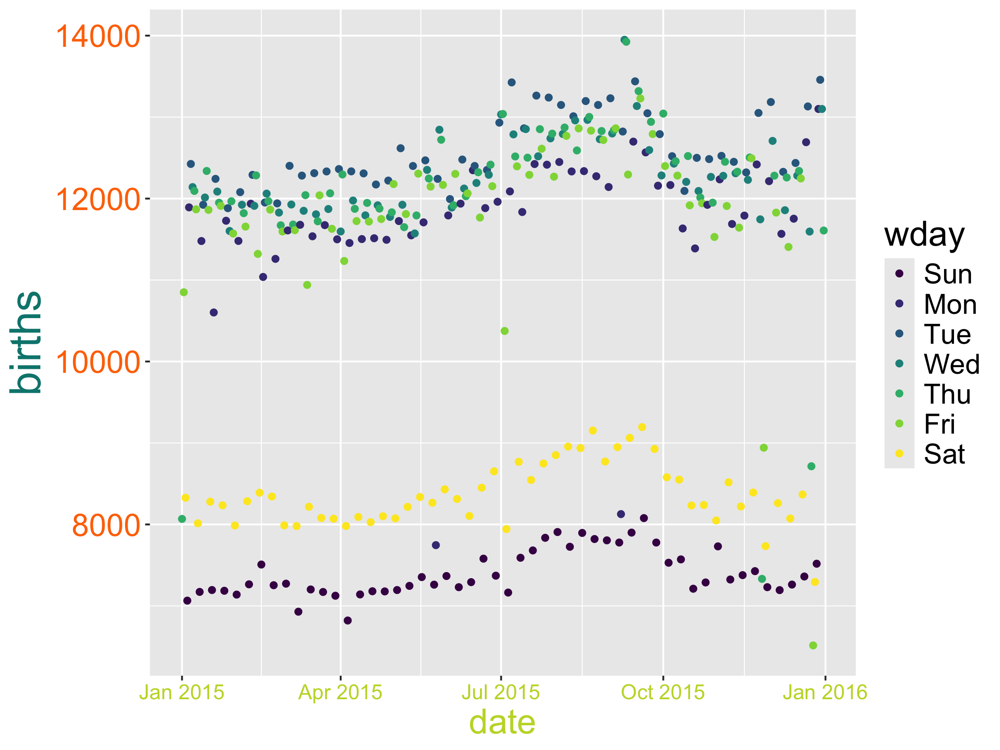
Built-in Themes

Built-in Themes
Built-in Themes
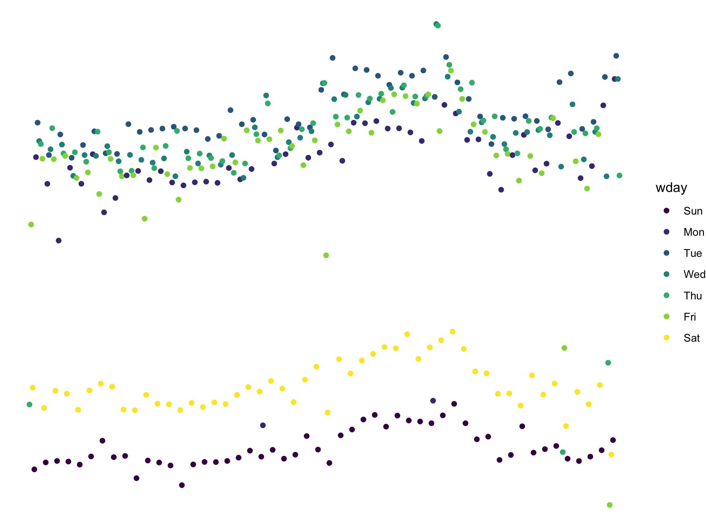
- Useful for maps and pie charts!
Additional Themes Package: ggthemes
Additional Themes Package
Saving/exporting your figures
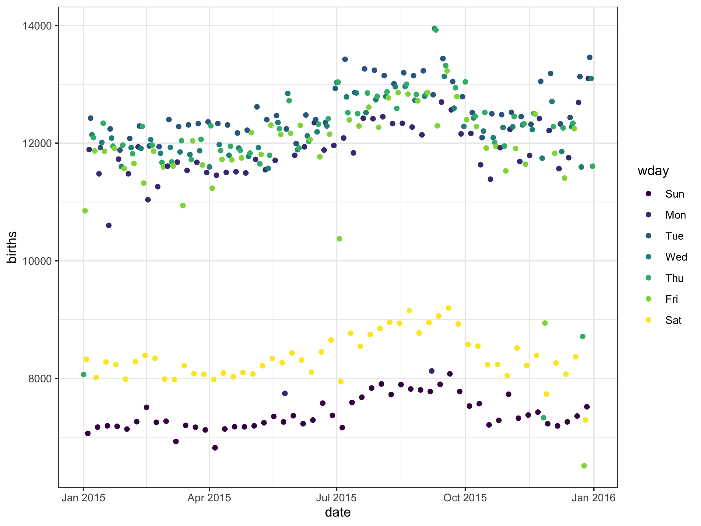
Reproducible Workflow
One where if you shared your data and work with someone else, they could reproduce your results.
Not the same as replication: Where someone collects new data following your same design to see if they get the same results.
Quartodocuments allow us to include ourRcode, output, and narrative in the same place.- Load the raw data.
- Be transparent about all the analysis steps.
- Even if you don’t showcase the
Rcode in the output file, it is contained in theqmdfile.

Creating reproducible examples with reprex

Why do I need to learn to create reproducible technical examples?
- So that you can ask and answer questions in our class Slack Workspace or Stack Overflow or other
Rhelp sites!
First, let’s take a look at some bad examples!
What is wrong with this coding question?
I am trying to create a plot and I can’t get the bars to do what I want them to. Help?!
What is wrong with this coding question?
I want to do the following but it isn’t working:
thing <- read.csv(“long/file/path/thing.csv”)
ggplot(thing, aes(x = factor(that))) + geom_bar()
Help?!
What is wrong with this coding question?
I want to reorder the bars of my plot but can’t get it working. Help!
library(tidyverse)
library(palmerpenguins)
penguins <- penguins %>%
group_by(species) %>%
mutate(mean_flipper = mean(flipper_length_mm)) %>%
ungroup() %>%
mutate(long = case_when(flipper_length_mm < mean(flipper_length_mm) ~ "no",
flipper_length_mm >= mean(flipper_length_mm) ~ "yes"))
penguins %>%
ggplot(mapping = aes(x = factor(species))) +
geom_bar()What is wrong with this coding question?
I want to reorder the bars of my plot but can’t get it working. Help!
What makes a good coding question?
It uses a minimal dataset to reproduce the issue.
It includes the shortest amount of runnable code necessary to reproduce the issue.
It doesn’t wreak havoc on other people’s computers.
It includes code and output so that others don’t have to run it!
- It includes any necessary information on the used packages, R version, system, etc.
- Should not be a concern for our class Slack since we are all on the same RStudio Server.
- Can use
packageVersion("tidyverse")orsessionInfo()to find this information.
Minimal Dataset: two good options
Create a toy data frame.
Use a built-in dataset or a dataset from a particular package.
# A tibble: 344 × 10
species island bill_length_mm bill_depth_mm flipper_length_mm body_mass_g
<fct> <fct> <dbl> <dbl> <int> <int>
1 Adelie Torgersen 39.1 18.7 181 3750
2 Adelie Torgersen 39.5 17.4 186 3800
3 Adelie Torgersen 40.3 18 195 3250
4 Adelie Torgersen NA NA NA NA
5 Adelie Torgersen 36.7 19.3 193 3450
6 Adelie Torgersen 39.3 20.6 190 3650
7 Adelie Torgersen 38.9 17.8 181 3625
8 Adelie Torgersen 39.2 19.6 195 4675
9 Adelie Torgersen 34.1 18.1 193 3475
10 Adelie Torgersen 42 20.2 190 4250
# ℹ 334 more rows
# ℹ 4 more variables: sex <fct>, year <int>, mean_flipper <dbl>, long <chr>Minimal Code
Include the necessary libraries.
Test run the code in a restarted R session to make sure it is runnable!
Make sure your code is copy-and-paste-able!
Don’t copy from the console.
Make sure your code is copy-and-paste-able!

Now we have our reproducible example:
How can I reorder the bars in the ggplot to go from the most frequent to the least frequent category?
How can we easily share it?
- Using the
reprex()function in thereprexpackage.
reprex Practice Time!
But first: Q: What is an R script file?
- A text file for entering R commands.
Q: How is an R script file different from a Quarto or RMarkdown document?
- You only put code in an
Rscript.
- If you add any text you must comment it out with
#. - Think of it as a single
Rchunk that you won’t knit into an output document. - Useful when writing a lot of code and want to compartmentalize.
reprex Practice Time!
In Session, select “Clear Workspace” and then “Restart R”.
Open a script file and include in the top line:
- Put the code you want to use in the script file and make sure it runs.
Surround the code with
reprex({ ... }, venue = "slack")and run it.An md file will pop up. Copy all the contents of that file.
Head over to the
#coding-qachannel and paste in the contents as a reply to thereprexpractice message. A text box will pop-up and select “Apply”.Above your code, type your question. Then hit “Send”.
Next week
Learn to make animated figures!
Hone our data wrangling skills
P-set 1 due on Thursday 2/12